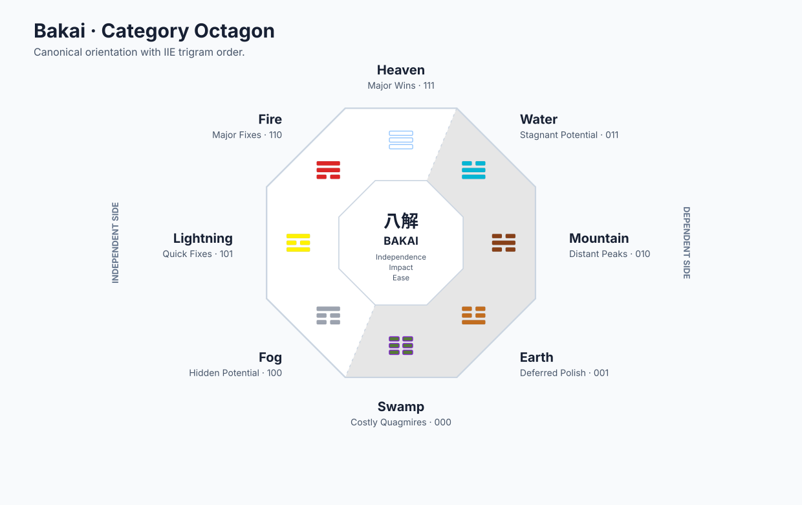
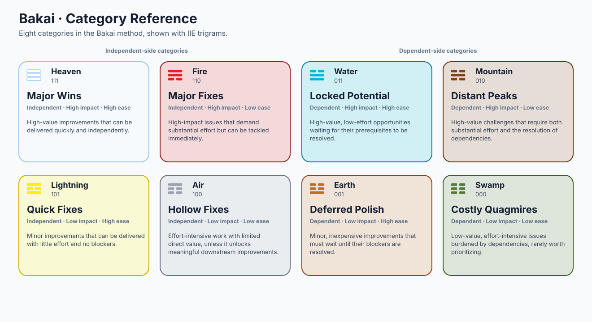

Bakai · 八解
Eight-category prioritization matrix · v0.4.0
Classify work by Impact, Ease and Independence. Identify opportunities to unblock other work through Unlocking Power.


Eight categories
| IIE | Element | Category |
|---|
| 111 | Heaven | Major Wins
Thou art blessed. |
| 110 | Fire | Major Fixes
Fire must be extinguished. |
| 101 | Lightning | Quick Fixes
Strike while you can. |
| 100 | Air | Hollow Fixes
Don't grasp at thin air. |
| 011 | Water | Stagnant Potential
Water must flow. |
| 010 | Mountain | Distant Peaks
The summit awaits. |
| 001 | Earth | Deferred Polish
Let the dust settle. |
| 000 | Swamp | Costly Quagmires
No one likes it here. |
Containment Splitting
Separate short-term containment from the definitive fix when useful. Dependency-driven candidates are Fire and Air with positive Unlocking Power. Impact-driven candidates are Fire, Water and Mountain.
Bagraph
Explore the interactive three-dimensional visualization, generated from the issues and dependency graph Markdown files. The SVGs above describe the method independently of the example dataset. Open full screen. Internet access is required for Plotly.
Full documentation (Markdown) · GitHub repository